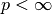

ProductSpace¶
-
class
odl.space.pspace.ProductSpace(*spaces, **kwargs)[source]¶ Bases:
odl.set.space.LinearSpaceCartesian product of
LinearSpace’s.A product space is the Cartesian product
X_1 x ... x X_nof linear spacesX_i. It is itself a linear space, where the linear combination is defined component-wise. Inner product, norm and distance can also be defined in natural ways from the corresponding functions in the individual components.- Attributes
complex_spaceVariant of this space with complex dtype.
dtypeThe data type of this space.
element_typeexamplesReturn examples from all sub-spaces.
exponentExponent of the product space norm/dist,
Nonefor custom.fieldScalar field of numbers for this vector space.
is_complexTrue if this is a space of complex valued vectors.
is_power_spaceTrueif all member spaces are equal.is_realTrue if this is a space of real valued vectors.
is_weightedReturn
Trueif the space is not weighted by constant 1.0.nbytesTotal number of bytes in memory used by an element of this space.
real_spaceVariant of this space with real dtype.
shapeTotal spaces per axis, computed recursively.
sizeTotal number of involved spaces, computed recursively.
spacesA tuple containing all spaces.
weightingThis space’s weighting scheme.
Methods
_dist(self, x1, x2)Distance between two elements.
_divide(self, x1, x2, out)Quotient
out = x1 / x2._inner(self, x1, x2)Inner product of two elements.
_lincomb(self, a, x, b, y, out)Linear combination
out = a*x + b*y._multiply(self, x1, x2, out)Product
out = x1 * x2._norm(self, x)Norm of an element.
astype(self, dtype)Return a copy of this space with new
dtype.contains_all(self, other)Test if all elements in
otherare contained in this set.contains_set(self, other)Test if
otheris a subset of this set.dist(self, x1, x2)Return the distance between
x1andx2.divide(self, x1, x2[, out])Return the pointwise quotient of
x1andx2element(self[, inp, cast])Create an element in the product space.
inner(self, x1, x2)Return the inner product of
x1andx2.lincomb(self, a, x1[, b, x2, out])Implement
out[:] = a * x1 + b * x2.multiply(self, x1, x2[, out])Return the pointwise product of
x1andx2.norm(self, x)Return the norm of
x.one(self)Create the one element of the product space.
zero(self)Create the zero element of the product space.
-
__init__(self, \*spaces, \*\*kwargs)[source]¶ Initialize a new instance.
- Parameters
- space1,…,spaceN
LinearSpaceor int The individual spaces (“factors / parts”) in the product space. Can also be given as
space, nwithninteger, in which case the power spacespace ** nis created.- exponentnon-zero float or
float('inf'), optional Order of the product distance/norm, i.e.
dist(x, y) = np.linalg.norm(x-y, ord=exponent)norm(x) = np.linalg.norm(x, ord=exponent)Values
0 <= exponent < 1are currently unsupported due to numerical instability. SeeNotesfor further information about the interpretation of the values.Default: 2.0
- field
Field, optional Scalar field of the resulting space. Default:
spaces[0].field- weightingoptional
Use weighted inner product, norm, and dist. The following types are supported as
weighting:None: no weighting (default)Weighting: weighting class, used directly. Such a class instance can be retrieved from the space by theProductSpace.weightingproperty.array-like: weigh each component with one entry from the array. The array must be one-dimensional and have the same length as the number of spaces.float : same weighting factor in each component
- space1,…,spaceN
- Other Parameters
- distcallable, optional
The distance function defining a metric on the space. It must accept two
ProductSpaceElementarguments and fulfill the following mathematical conditions for any three space elementsx, y, z:dist(x, y) >= 0dist(x, y) = 0if and only ifx = ydist(x, y) = dist(y, x)dist(x, y) <= dist(x, z) + dist(z, y)
By default,
dist(x, y)is calculated asnorm(x - y).Cannot be combined with:
weighting, norm, inner- normcallable, optional
The norm implementation. It must accept an
ProductSpaceElementargument, return a float and satisfy the following conditions for all space elementsx, yand scalarss:||x|| >= 0||x|| = 0if and only ifx = 0||s * x|| = |s| * ||x||||x + y|| <= ||x|| + ||y||
By default,
norm(x)is calculated asinner(x, x).Cannot be combined with:
weighting, dist, inner- innercallable, optional
The inner product implementation. It must accept two
ProductSpaceElementarguments, return a element from the field of the space (real or complex number) and satisfy the following conditions for all space elementsx, y, zand scalarss:<x, y> = conj(<y, x>)<s*x + y, z> = s * <x, z> + <y, z><x, x> = 0if and only ifx = 0
Cannot be combined with:
weighting, dist, norm
Notes
Inner product, norm and distance are evaluated by collecting the result of the corresponding operation in the individual components and reducing the resulting vector to a single number. The
exponentparameter influences only this last part, not the computations in the individual components. We give the exact definitions in the following:Let be a product space, and , , be inner products, norms and distances in the respective component spaces.
Inner product:
Norm:
:

 :
:
Distance:
:
- :
To implement own versions of these functions, you can use the following snippet to gather the vector of norms (analogously for inner products and distances):
norms = np.fromiter( (xi.norm() for xi in x), dtype=np.float64, count=len(x))
Examples
Product of two rn spaces
>>> r2x3 = ProductSpace(odl.rn(2), odl.rn(3))
Powerspace of rn space
>>> r2x2x2 = ProductSpace(odl.rn(2), 3)